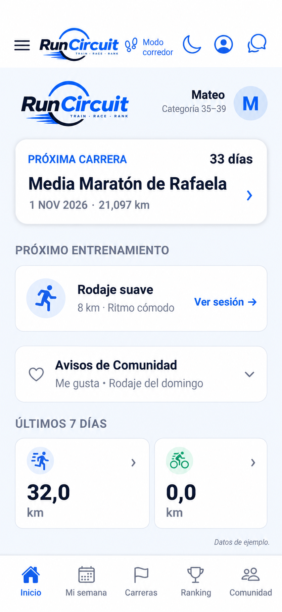
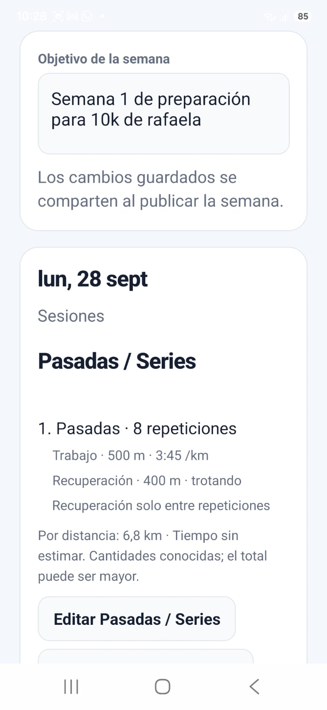
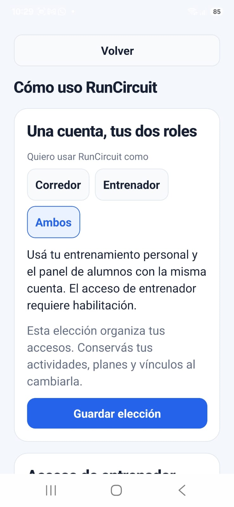
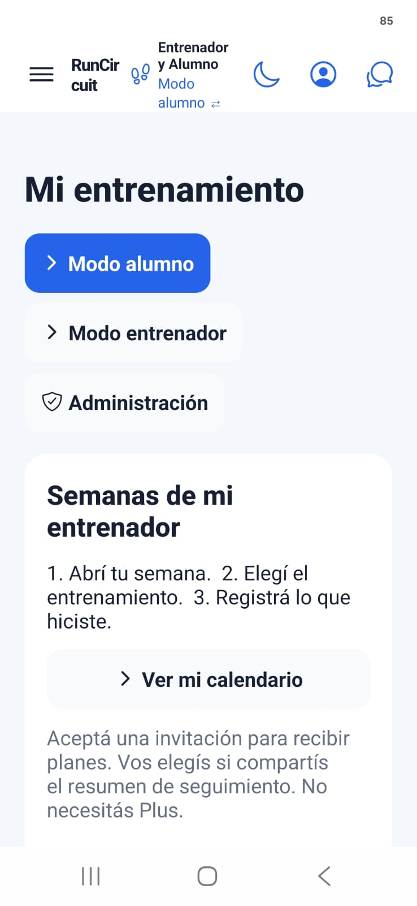
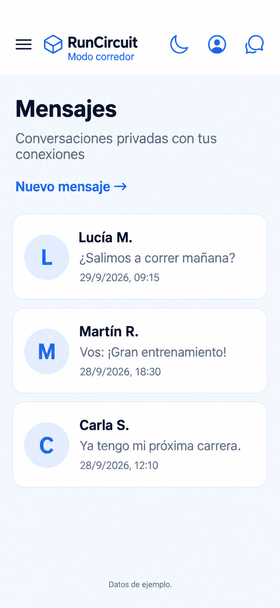
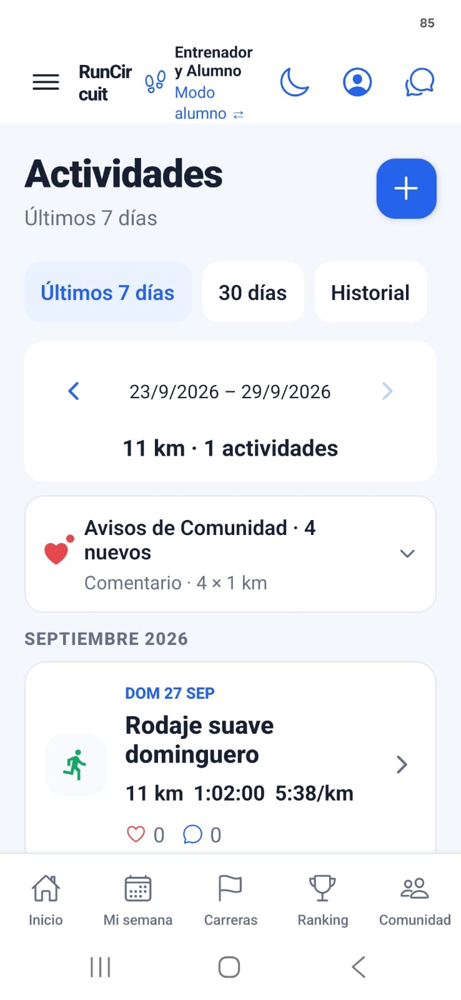
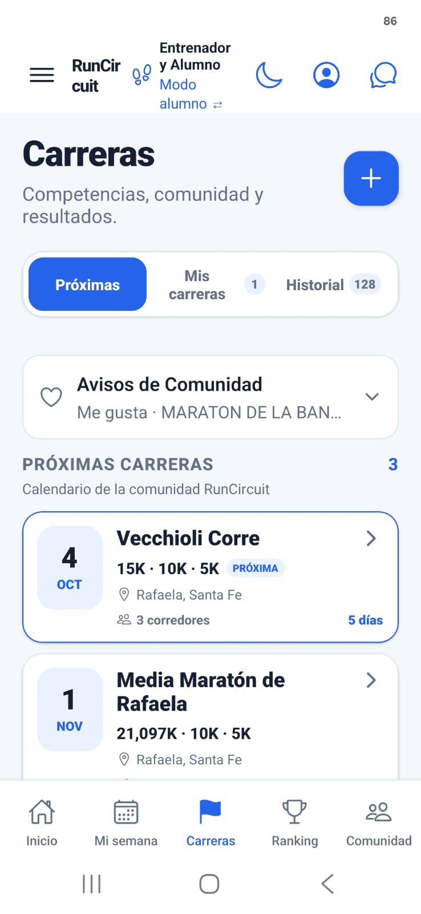

Calendario de carreras
Descubrí próximas competencias, distancias y toda la información en un mismo lugar.
RunCircuit es la app para corredores que reúne planes semanales, carreras, resultados, mensajes y una comunidad que comparte tu pasión por correr.

VISTA ILUSTRATIVA · DATOS DE EJEMPLODescubrí próximas competencias, distancias y toda la información en un mismo lugar.
Compará tus resultados por distancia, categoría, sexo y ubicación.
Encontrá corredores, explorá sus perfiles y generá nuevas conexiones.
Registrá entrenamientos, carreras, récords y seguí tu evolución.
Tu semana, tu entrenador y tu comunidad, más cerca.
Organizá el objetivo semanal y las sesiones con distancias, ritmos y recuperaciones. Como entrenador, compartí los cambios al publicar la semana.
Explorá las pantallas →Combiná tu entrenamiento personal con el panel de alumnos. Como alumno, aceptá una invitación para recibir planes y elegí si compartís tu resumen de seguimiento.
El acceso de entrenador requiere habilitación. Recibir planes como alumno no requiere Plus.
Conversá en privado con tus conexiones y seguí compartiendo el camino desde RunCircuit.
Conocé la comunidad →Capturas de la beta y vistas ilustrativas de inicio y mensajes, retocadas con datos ficticios para esta presentación.
Deslizá para explorar · Tocá una pantalla para ampliarla
Carreras, próximo entrenamiento y resumen de actividad. Vista ilustrativa con datos ficticios.

Objetivo semanal, series, distancias, ritmos y recuperaciones.

Elegí corredor, entrenador o ambos. El acceso de entrenador requiere habilitación.

Recibí las semanas de tu entrenador y registrá lo que hiciste.

Mensajes privados con tus conexiones. Vista ilustrativa con conversaciones ficticias.

Consultá tus actividades, ritmos y distancias por período.

Explorá próximas competencias y organizá tus carreras.
El calendario de la comunidad reúne competencias para que puedas descubrir qué correr y dónde.
Ejemplos de competencias que forman parte del calendario de RunCircuit.
Próximamente este calendario se actualizará automáticamente con las carreras publicadas por la comunidad RunCircuit.
Compará tus resultados con otros corredores por distancia y categoría.
Ejemplo ilustrativo · corredores ficticios
Buscá por nombre, ciudad o club a corredores que forman parte de RunCircuit.
Generá conexiones, conversá por mensajes privados y construí tu comunidad de running.
Explorá perfiles, carreras y la actividad competitiva de otros corredores.
RunCircuit también te ayuda a registrar y organizar tu propia actividad como corredor.
Registrá rodajes, pasadas, bloques, fondos y otras actividades.
Conservá tus resultados y competencias en un único historial.
Seguí tus mejores marcas en las principales distancias.
Visualizá tu evolución y mantené tus objetivos siempre presentes.
RunCircuit nace con una idea simple: reunir en un mismo lugar las carreras, los resultados, los rankings y la comunidad que forma parte del running.
Una plataforma creada en Argentina para corredores, con la mirada puesta en seguir creciendo.
Probá la versión Beta y ayudanos a seguir construyendo una mejor comunidad para corredores.